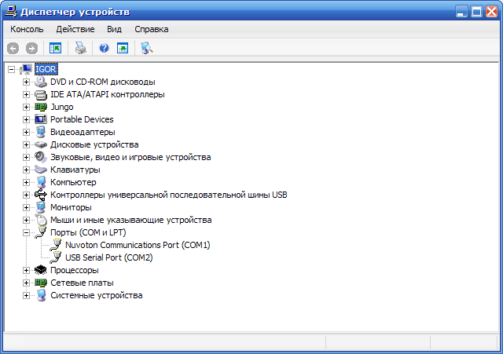
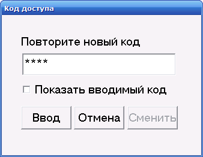
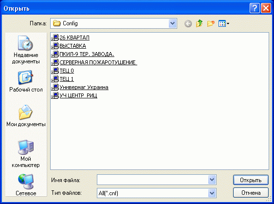
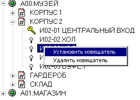

Назначение программы
Программа ОмегаМонитор предназначена для работы в составе программно-аппаратного комплекса "Омега" и осуществляет контроль за охраняемыми объектами в режиме реального времени. В дежурном режиме программа принимает сообщения о событиях (пожар,отказ и т.п.) от обслуживаемых систем пожарной безопасности "Омега" , выводит их в табличном и графическом виде на монитор компьютера. Программа ОмегаМонитор может обслуживать в составе комплекса до 32 систем пожарной безопасности "Омега".
Состав программного обеспечения
Для установки, на целевой компьютер, необходимо распаковать архивный файл OmegaMonitor.zip c диска CD-ROM, входящего в комплект поставки. После распаковки на компьютере пользователя создается папка OmegaMonitor.Программное обеспечение ОмегаМонитор построенно по клиент-серверной модели и состоит из двух программных модулей OmegaMonitorServer и OmegaMonitorClient. Программное обеспечение работает под управлением ОС Windows XP,7,8,10.
Запуск и настройка сервера
Функциональное назначение
Программный модуль OmegaMonitorServer производит постоянный опрос подключенных систем пожарной безопасности "Омега" и создает на компьютере сервер для связи с OmegaMonitorClient. Для создания сервера необходимо из папки OmegaMonitor/OmegaMonitorServer запустить программу OmegaMonitorServer.exe. Один OmegaMonitorServer может обслуживать до 8-ми систем "Омега". Если на одном компьютере необходимо установить обслуживание большего количества систем, то можно запустить несколько копий программ OmegaMonitorServer.exe. При первом запуске программа OmegaMonitorServer.exe в рабочем каталоге создает два файла
- OmegaMonitorServer.ini - для хранения текущих настроек программы
- OmegaMonitorServer.log - для хранения отчетов о работе программы
Настройка соединения
Для настройки нового соединения необходимо при помощи клавиатуры или мыши выбрать свободную строку в таблице соединений и нажать [Ctrl+Enter] или двойной клик мыши. Задать адрес подключаемой системы "Омега"
Внимание
| Адрес должен быть уникальным в рамка программы ОмегаМонитор |
Выбрать тип подключения
Сервер поддерживает два типа соединений с сиcтемами пожарной безопасности "Омега"
- через адаптер связи USB-RS485
- через адаптер связи USB-RS485 Type B
- через адаптер связи Ethernet-RS485
Соединение USB-RS485
Данный тип соединения предназначен, в основном, для подключения систем пожарной безопасности "Омега" серии E (2005-2011 годов выпуска) и приборов серии F c версиями программного обеспечения ниже V09q.
Внимание
| Протокол для данного типа подключенния может иметь проблемы совместимости с системами на базе Windows 10.
Решение проблемы для приборов серии Е: переход на Windows 7 и, возможно, переход на программу OmegaMonitor версии 3.07 Решение проблемы для приборов серии F: такие же как для серии Е, но лучше обновить программное обеспечение приборов ПУ (ПУ-ПТ) |
Перед настройкой соединения через адаптер связи USB-RS485 типа АДС необходимо, при первом включении, установить драйвер FTDI, который находится на диске CD-ROM, входящим в комплект поставки оборудования. Так же, более свежие версии драйвера FTDI для FT232, можно скачать с сайта https://www.ftdichip.com/FTDrivers.htm.
Внимание
| Если не будет уcтановлен или будет установлен неправильно драйвер FTDI, то Windows установит свой драйвер USB-порта, который с адаптером связи USB-RS485 АДС будет работать некорректно |
После установки драйвера FTDI в диспетчере устройств операционной системы Windows должно появится устройство USB Serial Port(COM n)
|  |
В настройках соединения необходимо ввести указанный номер СОМ-порта
и нажать кнопку Сохранить. В таблице соединений появится новое соединение
Зеленый флажок в графе СОСТ подтверждает установление связи с централью системы "Омега".
Если связь с централью не установилась (желтый флажок в графе СОСТ), необходимо проверить правильность подключения и настроек. Aдаптер связи USB-RS485 АДС подключается к клемным колодкам A4/B4 прибора ПУ-П(ПУ-ПТ). В МЕНЮ/ОБЩИЕ НАСТРОЙКИ/ВНЕШН.КОММУНИКАЦИЯ/КОМПЬЮТЕРНАЯ(А4/B4) необходимо установить соответсвуюший адрес системы, включить коммуникацию по A4/B4 и выбрать адаптер USB-RS485.
| М | Е | Н | Ю | : | К | О | М | М | У | Н | И | К | А | Ц | И | Я | |||
|---|---|---|---|---|---|---|---|---|---|---|---|---|---|---|---|---|---|---|---|
| А | Д | Р | Е | С | : | 0 | 1 | С | О | С | Т | : | В | К | Л | ||||
| А | Д | А | П | Т | Е | Р | : | U | S | B | - | 4 | 8 | 5 | |||||
| П | Р | О | Т | О | К | О | Л | : | О | М | Е | Г | А |
Соединение USB-RS485 Type B
Данный тип соединения предназначен, в основном, для подключения систем пожарной безопасности "Омега" серии F,H
Внимание
| Версия программного обеспечения приборов ПУ (ПУ-ПТ) для данного типа соединения должна быть V09q и выше |
Для соединения USB-RS485 Type B необходимо в приборe ПУ-П(ПУ-ПТ) МЕНЮ/ОБЩИЕ НАСТРОЙКИ/ВНЕШН.КОММУНИКАЦИЯ/КОМПЬЮТЕРНАЯ(А4/B4) установить соответсвуюший адрес системы, включить коммуникацию по A4/B4 и выбрать адаптер USB-RS485TypeB.
| М | Е | Н | Ю | : | К | О | М | М | У | Н | И | К | А | Ц | И | Я | |||
|---|---|---|---|---|---|---|---|---|---|---|---|---|---|---|---|---|---|---|---|
| А | Д | Р | Е | С | : | 0 | 1 | С | О | С | Т | : | В | К | Л | ||||
| А | Д | А | П | Т | Е | Р | : | U | S | B | - | 4 | 8 | 5 | T | y | p | e | B |
| П | Р | О | Т | О | К | О | Л | : | О | М | Е | Г | А |
Внимание
| Если в программном обеспечении централи не предусмотрен тип адаптера USB-RS485TypeB, то необходимо выбрать тип Ethernet-RS485 или обновить ПО централи |
Соединение Ethernet-RS485
Для подключения системы пожарной безопасности "Омега" к серверу OmegaMonitorServer через локальную сеть применяется адаптер связи Ethernet-RS485 VTR-E/485 производства VKmodule
Для настройки соединения необходимо ввести номер порта и ip-адрес адаптера связи Ethernet-RS485 и нажать кнопку Сохранить. Более подробно настройки адаптера VTR-E/485 смотри здесь
Внимание
| В настройках адаптера VTR-E/485 скорость обмена необходимо выбрать равную 4800 |
Зеленый флажок в графе СОСТ подтверждает установление связи с централью системы "Омега".
Если связь с централью не установилась (желтый флажок в графе СОСТ), необходимо проверить правильность подключения и настроек. Aдаптер связи Ethernet-RS485 подключается к клемным колодкам A4/B4 прибора ПУ-П(ПУ-ПТ). В МЕНЮ/ОБЩИЕ НАСТРОЙКИ/ВНЕШН.КОММУНИКАЦИЯ/КОМПЬЮТЕРНАЯ(А4/B4) необходимо установить соответсвуюший адрес системы, включить коммуникацию по A4/B4 и выбрать адаптер Ethernet-RS485.
| М | Е | Н | Ю | : | К | О | М | М | У | Н | И | К | А | Ц | И | Я | |||
|---|---|---|---|---|---|---|---|---|---|---|---|---|---|---|---|---|---|---|---|
| А | Д | Р | Е | С | : | 0 | 2 | С | О | С | Т | : | В | К | Л | ||||
| А | Д | А | П | Т | Е | Р | : | E | T | H | E | R | N | E | T | - | 4 | 8 | 5 |
| П | Р | О | Т | О | К | О | Л | : | О | М | Е | Г | А |
Настройка сервера
Для настройки сервера необходимо зайти в Настройки/Настройки сервера
В настройках сервера можно поменять номер порта установленного по умолчанию (3714).
Необходимость в смене номера порта может возникнуть при создании на одном компьютере нескольких серверов
для обслуживания более 8-ми систем пожарной безопасности "Омега" или по требованию политики безопасности
локальной сети конкретного объекта.
Время опроса установлено по умолчанию 500 mC. Для большинства случаев данное время обеспечивает надежное и
стабильное соединение и не требует корректировки.
Дополнительные настройки
Программа OmegaMonitorServer, по умолчанию, запускается в стандартном для системы Windows окне, что удобно при настройки и обслуживании. В дежурном режиме, чтобы не перегружать дисплей компьютера излишней информацией, программу OmegaMonitorServer рекомендуется свернуть в трей.
Для того чтобы вернуть программу на рабочий стол, необходимо выполнить клик левой кнопкой мыши на иконке программы в трее.
Если в файле настроек OmegaMonitorServer.ini при помощи любого текстового редактора (например NotePad) строку ЗАГРУЗКА В ТРЕЙ=НЕТ заменить на ЗАГРУЗКА В ТРЕЙ=ДА, то программа OmegaMonitorServer будет всегда загружаться в трей.
Ограничение доступа
В программе OmegaMonitorServer можно ограничить доступ со стороны клиентов. По умолчанию, в файле настроек
OmegaMonitorServer.ini в секции [КЛИЕНТЫ] устанавливаются параметры LOCALHOST=ДОСТУП РАЗРЕШЕН и ЛЮБОЙ=ДОСТУП РАЗРЕШЕН,
т.е любой клиент запущенный в сети имеет доступ к серверу. Если удалить строку ЛЮБОЙ=ДОСТУП РАЗРЕШЕН, то доступ к серверу получить клиент
запущенный на том же компютере, что и сервер (строка LOCALHOST=ДОСТУП РАЗРЕШЕН). Правильной политикой безопасности будет дать разрешение для
конкретных компьютеров в сети. Например, запись строк
[КЛИЕНТЫ]
LOCALHOST=ДОСТУП РАЗРЕШЕН
ИМЯ КОМПЬЮТЕРА 1=ДОСТУП РАЗРЕШЕН
ИМЯ КОМПЬЮТЕРА 2=ДОСТУП РАЗРЕШЕН
ИМЯ КОМПЬЮТЕРА 3=ДОСТУП ОГРАНИЧЕН
дает возможность доступа к серверу трем клиентам запущенным на компьютерах в локальной сети и одному клиенту с компьютера
сервера. Стока ИМЯ КОМПЬЮТЕРА 3=ДОСТУП ОГРАНИЧЕН дает возможность с этого компьютера давать команды СБРОС и ЗВУК ОТКЛ, но
запрещает команды ВКЛЮЧЕНИЯ/ВЫКЛЮЧЕНИЯ ИЗВЕЩАТЕЛЕЙ
На заметку
| Редактировать файл настроек OmegaMonitorServer.ini можно при помощи любого текстового редактора (например NotePad). |
Начиная с версии V7.02 в программу OmegaMonitorServer введена система ограничения доступа. При ее использовании, такие операции как настройка сервера, настройка соединения и закрытие программы доступны только после ввода кода доступа.
На заметку
| При входе в настройки код доступа вводится только первый раз. Разрешение на доступ сбрасывается командой ПЕРЕЗАПУСК |
При поставке программы код доступа имеет значение 0000. Такое значение кода отключает систему контроля доступа по
умолчанию.
Для изменения кода доступа необходимо выполнить МЕНЮ/СМЕНИТЬ КОД ДОСТУПА или клавишу <F9>
Откроется окно диалога смены кода доступа
Если код доступа имеет значение 0000, то он сразу появляется в окне редактирования и необходимо только нажать кнопку | CМЕНИТЬ |. В противном случае необходимо ввести действующий код, а затем нажать кнопку | CМЕНИТЬ |.
Введите новый код доступа и нажмите кнопку | ВВОД | или клавишу ENTER
|  |
Повторите новый код доступа и нажмите кнопку | ВВОД | или клавишу ENTER. При успешном завершении операции появится сообщение
"Горячие" клавиши
<F1> - вызов справки
<F5> - перезапуск сервера
<F8> - настройки сервера
<F9> - сменить код доступа
<Ctrl+T> - спрятать программу в трей
<Ctrl+S> - сохранить настройки сервера/соединения
<Del> - удалить соединение
<Esc> - выйти из режима настройки сервера/соединения
<Ctrl+F4> - выйти из программы
Запуск и настройка клиента
Функциональное назначение
Программный модуль OmegaMonitorClient предназначен для предоставление информации об охраняемом объекте в удобном для оператора виде (планы объекта, списки, архивы и т.п.). OmegaMonitorClient может запускаться как на локальном компьютере (там где запущен OmegaMonitorServer ), так и на любом удаленном компьютере в рамках локальной сети. Программный комплекс ОмегаМонитор позволяет организовать несколько рабочих мест операторов на объекте и обслуживать до 32 систем пожарной безопасности "Омега".
Пользовательский интерфейс
Программа ОмегаМонитор на экране монитора состоит из следующих панелей:
- меню
- кнопки быстрого доступа
- журнал событий
- планы объектов
- состава комплекса
- таблица событий
- панель служебной информации
Внешний вид окна программы показан на рисунке.
Нажатием кнопок в правом верхнем углу таблицы событий можно скрыть панель ПЛАНЫ ОБЪЕКТОВ и работать только с текстовой информацией
Состав комплекса
На панеле СОСТАВ КОМПЛЕКСА в виде древовидной структуры отображаются все обслуживаемые системы пожарной сигнализации. Пример такой структуры приведен на рисунке.
Ввод новой системы в состав комплекса
Для ввода в состав комплекса новой системы пожарной сигнализации "Омега", необходимо при помощи пункта меню Сервис/Ввести в состав в окне диалога OC Windows выбрать требуемую конфигурацию,
|  |
ввести адрес подключаемой системы, имя или ip-адрес и номер порта сервера
На заметку
| Имя, ip-адрес и номер порта сервера можно посмотреть в заголовке окна программы OmegaMonitorServer.exe |
нажать кнопку Сохранить. Процедура подготовки файла конфигурации может длится, в зависимости от состава системы, несколько минут. После окончания в журнал событий заносится сообщение
| CИСТЕМА ***** ВВЕДЕНА В СОСТАВ КОМПЛЕКСА |
Изменение состава системы
Для изменения состава системы (удаление добавления извещателей, зон и т.п.) необходимо:
- На панели СОСТАВ КОМПЛЕКСА выбрать редактируемую систему. Зайти в меню Сервис/Вывести из состав
и подтвердить удаление.
- Отредактируйте систему в программе ОмегаКонфигуратор
- При помощи пункта меню Сервис/Ввести в состав включите отредактированную конфигурацию в комплекс (см. Ввод новой системы в состав комплекса )
Вывод системы из состава комплекса
На панели СОСТАВ КОМПЛЕКСА выбрать выводимую систему. Зайти в меню Сервис/Вывести из состав
и подтвердить удаление.
Работа с планами объектов
Каждой системе комплекса в программе ОмегаМонитор можно поставить в соответствие несколько графических планов. Для этого при помощи пункта меню Сервис/Редактор планов необходимо войти в режим редактирования, выбрать на панели СОСТАВ СИСТЕМЫ требуемую систему пожарной сигнализации или ее зону и нажать правую кнопку мыши для вызова меню.
Если в меню выбрать пункт Загрузить план, то в открывшемся окне необходимо выбрать файл заранее подготовленного плана (поддерживаемый формат .bmp). В далнейшем при выборе этой системы/зоны на панеле ПЛАНЫ ОБЪЕКТОВ будет выводится соответствующее графическое изображение. При выборе пункта меню Создать план вызывается графический редактор Paint, входящий в комплект поставки OC Windows. При создании планов можно воспользоваться любым доступным графическим редактором (например Corel) или специализированными программами (например AutoCAD), которые поддерживают графические форматы .bmp. После создания плана необходимо выполнить процедуру загрузки, которая описана выше. После привязки системы и ее зон к соответсвующим планам необходимо осуществить процедуру установки извещателей на план. Для этого на панеле СОСТАВ СИСТЕМЫ выбрать требуемый извещатель и нажать правую кнопку мыши для вызова меню.
|  |
Выбрать пункт меню Установить извещатель, навести курсор мыши на требуемое место на плане и нажать левую кнопку мыши. Повторить данную процедуру для всех необходимых извещателей. Информация об установленных извещателях хранится в файле OmegaMonitorPosition.ini
Для удаления ранее установленного извещателя на панеле СОСТАВ СИСТЕМЫ выбрать требуемый извещатель и нажать правую кнопку мыши и выбрать пункт меню Удалить извещатель. Для выхода из режима редактирования необходимо повторно выбрать пункта меню Сервис/Редактор планов.
Режимы работы программы
После запуска программа OmegaMonitorClient.exe устанавливает связь с сервером. При возникновении пожара программа включает звуковую сигнализацию (при наличии звуковой системы на ПЭВМ) и транспарант ПОЖАР на панеле КНОПОК БЫСТРОГО ДОСТУПА. Раскрывает структуру на панеле СОСТАВ СИСТЕМЫ до уровня извещателя, выдавшего сигнал пожар, а на панель ПЛАНЫ ОБЪЕКТОВ план зоны и местоположение извещателя на нем.
Информация о пожаре заносится в таблицу событий и журнал событий с указанием даты и времени.
При обнаружении отказа какого-либо элемента (прибора, извещателя, линии связи и т.п.) программа включает звуковую сигнализацию, отличную от сигнализации о пожаре, и транспарант ОТКАЗ на панеле КНОПОК БЫСТРОГО ДОСТУПА. Раскрывает структуру на панеле СОСТАВ СИСТЕМЫ до уровня отказавшего извещателя, а на панель ПЛАНЫ ОБЪЕКТОВ план зоны и местоположение извещателя на нем.
Информация об отказе заносится в таблицу событий и журнал событий с указанием даты и времени.
В дежурном режиме при нажатии правой кнопки мыши на панеле СОСТАВ КОМПЛЕКСА открывается меню с командами управления системами пожарной сигнализации "Омега".
 |
Доступны следующие основные команды:
- Контроль - на выбранную систему пожарной сигнализации выдается команда КОНТРОЛЬ
- Звук откл. - на выбранную систему пожарной сигнализации выдается команда ЗВУК ОТКЛ. При этом звуковая сигнализация отключается и на компьютере
- Модуль управления - позволяет на приборе ПУ-П запустить выбранный сценарий
- Включить извещатель* - на выбранную систему пожарной сигнализации выдается команда ВКЛЮЧИТЬ ИЗВЕЩАТЕЛЬ. После выполнения команды прибором ПУ-П цвет иконки перед извещателем должен стать желтым .
- Выключить извещатель* - на выбранную систему пожарной сигнализации выдается команда ВЫКЛЮЧИТЬ ИЗВЕЩАТЕЛЬ. После выполнения команды прибором ПУ-П цвет иконки перед извещателем должен стать белым .
*Примечаниe: после выполнения данных команд желательно подать команду Контроль.
Доступны следующие дополнительные команды:
- Показать извещатели на плане - на план выводятся все (или только выбранный) извещатели, относящиеся к этой зоне. Если на изображении извешателя нажать правую кнопку мыши, то открывается меню с командами(см. выше).
- Скрыть извещатель на плане - метка извещателя скрывается на плане. По умолчанию, все извещатели, кроме тех, которые находятся в состояниях ПОЖАР или ОТКАЗ, на планах скрыты.
Начиная с версии V7.02 программы OmegaMonitorClient.exe в меню Сервис/Показать все извещатели на планах можно установить этот режим для всех зон одновременно.
События и сообщения
Все сообщения от систем пожарной сигнализации подразделются на события и подтверждение команд. К событиям относятся сообщения о пожарах, тревогах или отказах. Ниже приведены примеры событий:
События и подтверждения выполнения команд индицируются в окне сообшений по мере поступления и могут быть просмотрены в выпадающем списке.
Кнопки быстрого доступа и меню
На панеле КНОПОК БЫСТРОГО ДОСТУПА доступны следующие
кнопки управления:
-команда ЗВУК ОТКЛ. выключает звуковую
сигнализацию на компьютере. Команда не влияет на состояние приборов систем пожарной сигнализации.
Альтернативный вызов: меню Режим/Отключить звук или на клавиатуре
F6.
Внимание
| Нажатие на клавиатуре кнопки F6 выключает звуковую сигнализацию на подключенных приборах систем пожарной сигнализации |
-команда СБРОС ТРЕВОГИ сбрасывает состояние
тревоги на на компьютере. Команда не влияет на состояние приборов
систем пожарной сигнализации.
Альтернативный вызов: меню Режим/Сброс тревоги или на клавиатуре
F7.
-открывает файл справки.
Альтернативный вызов: меню Справка/Помощь или на клавиатуре
F1.
Дополнительные настройки
Дополнительные настройки осуществляются редактированием файла настроек OmegaMonitorP.ini.
На заметку
| Редактировать файл настроек OmegaMonitorP.ini можно при помощи любого текстового редактора (например NotePad). |
При запуске программа OmegaMonitorClient, по умолчанию, запускает (если она еще не запущена) программу OmegaMonitorServer из рабочего каталога. Если программа OmegaMonitorClient работает по локальной сети на удаленном компьютере, то необходимо в файле настроек OmegaMonitorP.ini заменить строку ЗАПУСК СЕРВЕРА=ДА на строку ЗАПУСК СЕРВЕРА=НЕТ.
По умолчанию, на одном компьютере запрещено запускать вторую копию программы OmegaMonitorClient. Если по каким-либо причинам, необходимо запускать больше одной коппи на одном компьютере, то строку ЗАПУСК КОПИИ=НЕТ в файле OmegaMonitorP.ini надо заменить на строку ЗАПУСК КОПИИ=ДА.
Ограничение доступа
Начиная с версии V7.02 в программу OmegaMonitorClient введена система ограничения доступа. При ее использовании, такие операции как групповой контроль и закрытие программы доступны только после ввода кода доступа. При поставке программы код доступа имеет значение 0000. Такое значение кода отключает систему контроля доступа. Работа с системой контроля доступа в программе OmegaMonitorClient аналогична программе OmegaMonitorServer (см. Oграничение доступа сервера).
Контактная информация
ЧП «РЕЗЕРВ-1», Украина, 61157, г. Харьков, ул. Москалевская, 99, В2
тел./факс: +38(057)703-21-57, (067)5781809, Попов Григорий Павлович, директор
телефоны тех. поддержки: +38 (057)7032158, (097)7836031
e-mail:rezerv-1@ukr.net
http://rezerv-1.com/